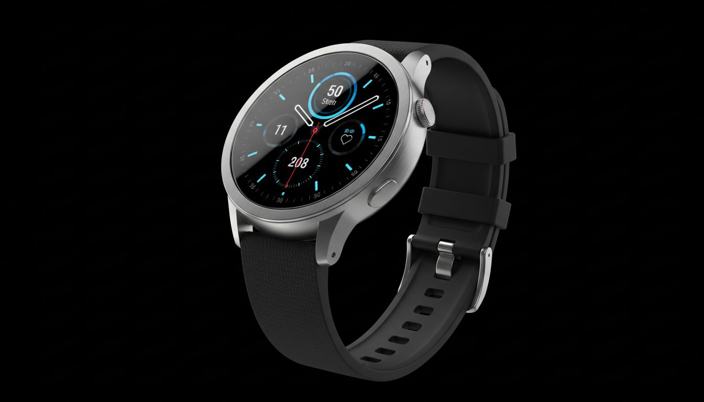

One platform. Every smart device.
Precision, Dissected.
Tester.io builds wearables, ambient computers and assistants that speak the same language. Watch, glasses, ring and home, finally in sync, finally understood.

Flagship · Smart Watch Pro
Precision, Dissected.
Featured in
Capabilities
Everything your devices need.
Six devices, one OS, on-device AI, and a privacy model built for how you actually live.
Pre-orderWearable Suite
On-Device Intelligence
Health & Sensing
Ecosystem
How it works
From unboxing to in sync.
Six steps from first power-on to a connected ecosystem you fully understand.
View specsUnbox
Each device ships with a teardown card: see what's inside before you even pair.
Pair
Open the Tester app. All devices auto-discover over encrypted local mesh.
Customize
Set your health goals, ANC preferences, and smart home scenes in one place.
Sync
Watch, ring and buds write to one health graph. 12ms cross-device handoff.
Automate
Smart Assistant triggers routines locally. No cloud, no subscription, no latency.
Own it
Your data lives on your devices. Export, delete, or keep it. Your call.
Products
The lineup, up close.
Six devices. Every component named, every material justified. Explore the full product range.
What people say
Worn by curious minds.
Engineers, designers and biohackers who finally understand the hardware on their wrist.
"I've worn every flagship watch. Tester's teardown video made me understand why this one actually tracks sleep accurately. First wearable I trust."
"The ring-to-watch handoff during workouts is seamless. And knowing the LLM never leaves my hub, that changed how I think about smart home."
"The live translation on the glasses with 34ms latency is real. I stopped reaching for my phone in meetings my second day wearing them."
FAQ
Questions, answered.
Everything else lives in our specs, or ask the team anytime.
Tester OS runs on all six Tester devices and integrates with iOS and Android for companion app features. Full standalone mode works without a phone.
No, unless you explicitly opt in. All processing, from health tracking to AI assistants, runs on-device. We are privacy certified with a full zero-cloud audit.
All Tester devices broadcast over an encrypted local mesh. When you switch context (e.g., call from watch to glasses), state transfers in under 12ms over Thread 1.3.
Yes. Smart Hub supports Thread 1.3 and Matter, so it works with Apple Home, Google Home, Amazon Alexa and any Matter-compatible sensor.
Every Tester device ships with a layered teardown video showing every component. We publish full repair guides and sell spare parts, because you should own what you own.